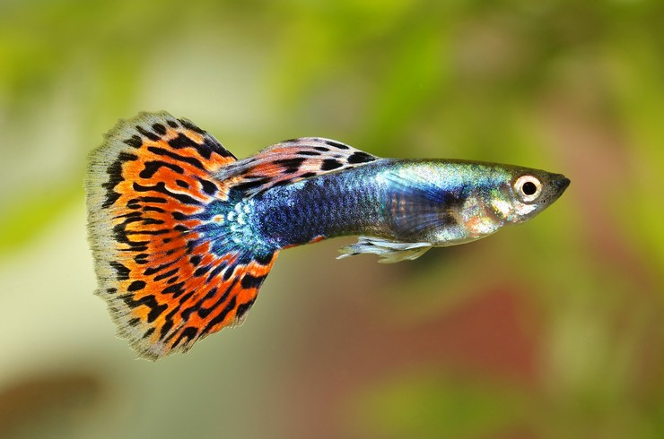
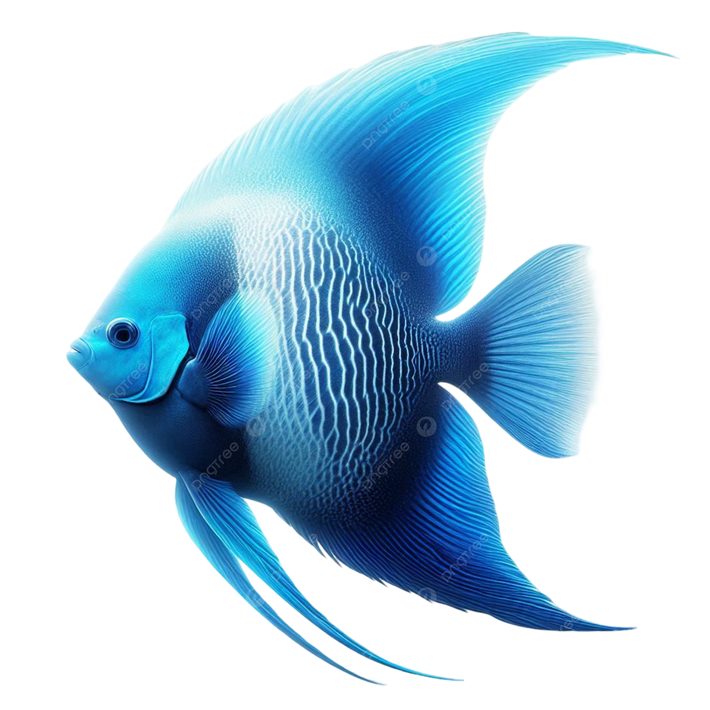
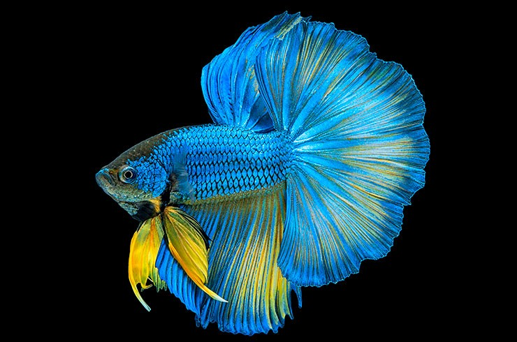
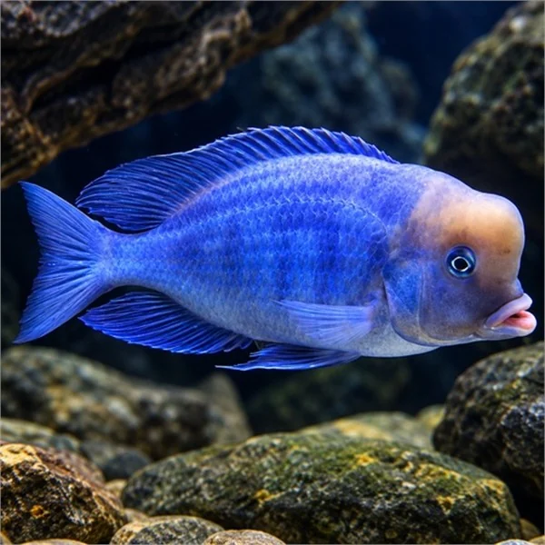
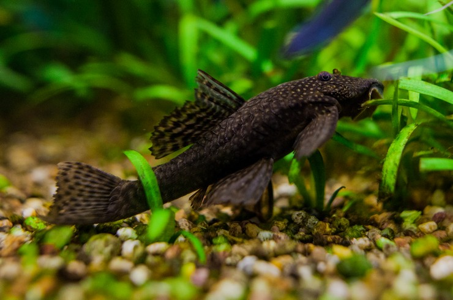
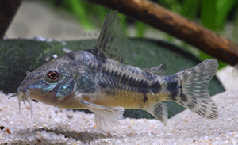

👑 Akvaryum Balık Cinsleri Ansiklopedisi
Su sertliği, mizaçları ve görkemli renkleriyle akvaryum dünyasının en popüler yüzücülerini keşfedin.
.jpg)
Japon Balığı (Goldfish)
Mizaç: Barışçıl / Sakin
Su Derecesi: 18-24°C (Soğuk su sever)
Akvaryum hobisinin en dayanıklı ve en eski türüdür. Kumları ağzına alıp püskürtmeyi çok severler; geniş hacimli akvaryumlara ihtiyaç duyarlar.

Lepistes (Guppy)
Mizaç: Çok Barışçıl
Su Derecesi: 22-28°C
Erkeklerinin yelpaze gibi rengarenk kuyrukları vardır. Canlı doğuranlar sınıfındadırlar, çok hızlı ürerler ve bitkili tropikal akvaryumlar için mükemmel bir seçimdir.

Melek Balığı (Angelfish)
Mizaç: Sakin ama Avcı
Su Derecesi: 24-28°C
Yassı, dikine uzayan asil gövdeleri ve uzun süzülen yüzgeçleriyle bilinirler. Sakindirler ancak ağızlarına sığabilecek neon tetra gibi çok küçük balıkları avlayabilirler.

Beta (Siyam Savaşçısı)
Mizaç: Agresif / Bölgeci
Su Derecesi: 24-28°C
Labirent organı sayesinde su yüzeyinden doğrudan hava soluyabilir. Muhteşem kuyruklara sahiptir. İki erkek yan yana geldiğinde ölümüne savaşır, bu yüzden kesinlikle **tek başına** bakılmalıdır.

Yunus Çiklet (Malawi)
Mizaç: Bölgeci / Hareketli
Su Derecesi: 24-26°C
Büyüdükçe kafalarında oluşan yunus benzeri kafa hörgücü ile ünlüdürler. Kayalık akvaryumları ve sert suları severler. Ağızda kuluçka yaparak yavrularını büyütürler.

Cüce Vatoz (Ancistrus)
Mizaç: Barışçıl / Utangaç
Görevi: Yosun Temizleyici
Vantuzlu ağız yapısıyla akvaryum camlarında, kayalarda ve dekorlarda oluşan yeşil yosunları kazıyarak beslenir. Akvaryumun cam temizliğini üstlenen gizli kahramandır.

Komando Çöpçü (Corydoras)
Mizaç: Çok Barışçıl / Sürü
Görevi: Taban Temizleyici
Bıyıklarıyla tabandaki kumları sürekli tarayarak diğer balıklardan arta kalan ve dibe çöken yemleri bulup yer. Suyu amonyak patlamasından korurlar. Sürü halinde yaşamayı severler.
🤝 Uyumlu Balık Seçimi (Karma Akvaryum)
- 🌡️ Su Parametreleri Uyumu: Aynı akvaryuma koyacağınız balıkların sıcaklık ve pH ihtiyaçları aynı olmalıdır. (Örn: Soğuk su seven Japon balığı ile sıcak su seven Lepistes yan yana yaşayamaz.)
- 🥩 Mizaç ve Karakter Dengesi: Agresif Çiklet türleri ile narin gövdeli barışçıl Lepistesler aynı akvaryuma konursa, çikletler diğer balıklara zarar verir.
- 📐 Katman Paylaşımı: Karma bir akvaryumda hem üst yüzeyde yüzen (Lepistes), hem orta seviyede gezen (Melek), hem de tabanda yaşayan (Çöpçü, Vatoz) balıklar seçilerek dengeli bir popülasyon kurulmalıdır.
⚠️ Türler Hakkında Doğru Bilinen Yanlışlar
❌ Yanlış: "Vatoz ve Çöpçü balıkları akvaryumdaki pislikleri ve dışkıları yer"
Bu inanılmaz yaygın ve yanlış bir efsanedir. Hiçbir balık başka bir balığın dışkısını yemez. Çöpçüler sadece dibe düşen taze **yem artıklarıyla**, vatozlar ise **yosunlarla** beslenir. Onlar da tıpkı diğer balıklar gibi düzenli dip çekimine ve normal balık yemine ihtiyaç duyarlar.
💡 Altın İpucu: Betalar Küçük Kaplarda Yaşatılmamalıdır
Betalar petshoplarda bardaklarda satıldığı için fanusta veya ufacık kaplarda yaşayabileceği zannedilir. Oysa ki betaların renklerini tam gösterebilmesi ve sağlıklı kalabilmesi için ısıtıcılı ve kendilerine ait en az 15-20 litrelik bitkili akvaryumlara ihtiyaçları vardır.